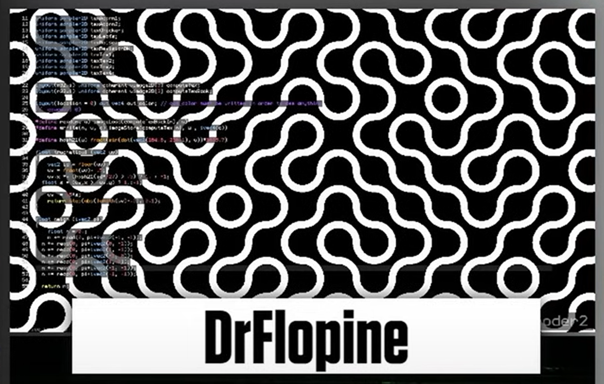

Wow, it's been more than a year since my last blog post. I suppose that's fitting, though, since this year's been a doozy.
Well, I have some more time now, and I've got so much energy to try some new stuff. I've been inspired especially by some graphics programming demos that were posted in our CS Club's show-and-tell channel, as well as Revision Demoparty's Shader Showdown. I still remember the first time I saw live shader coding; I was genuinely amazed at how much they were able to pull off in just 25 minutes, as well as the level of polish they were able to deliver.
Revision 2025 just happened, and Shader Showdown was once again pretty awesome. While the main event was the addition of compute shaders, one part of Flopine's submission really caught my eye.
It's such an elegant pattern, and I wanted to go through my own process of making it in the most optimized way. In the end, I learned things I never knew about GLSL and discovered the really welcoming community on Shadertoy.
The general idea is as follows:
The issue here, as FabriceNeyret2 pointed out in their comment, is that arrays are slow in GLSL, and that I'm not doing any antialiasing (which I can get for free!). Surely, I could find a new way to fix these issues.
Now we're talking. Let's take a look at what's different now!
Alright, so I got rid of the array! Instead, we have some math. The idea is that we pick a hash the same way as above, but instead of indexing into an array, we treat that hash as one of the four corners of our cell! Then, once we pick one corner of our cell, we can pick the diagonally opposing corner using
Check out the full shader on Shadertoy!
That's the end of this post. Thanks for reading!
Back to top ⤴